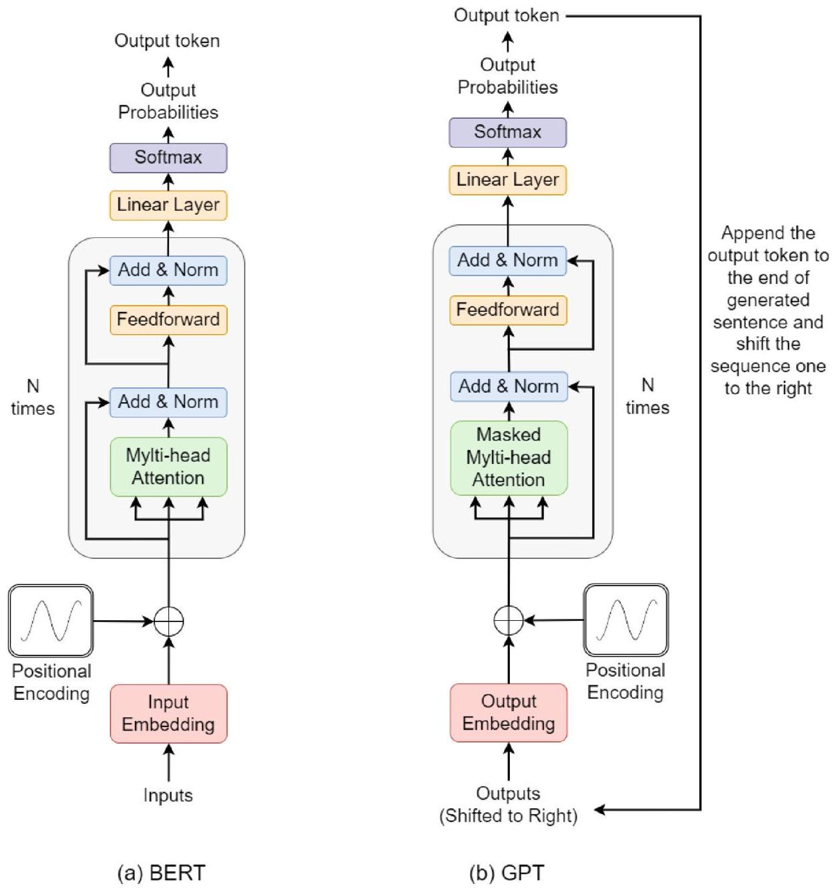
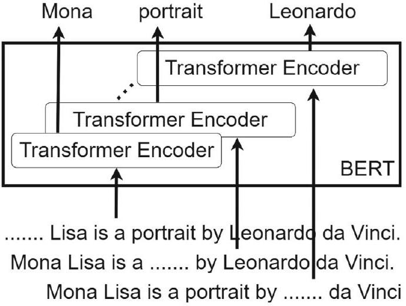
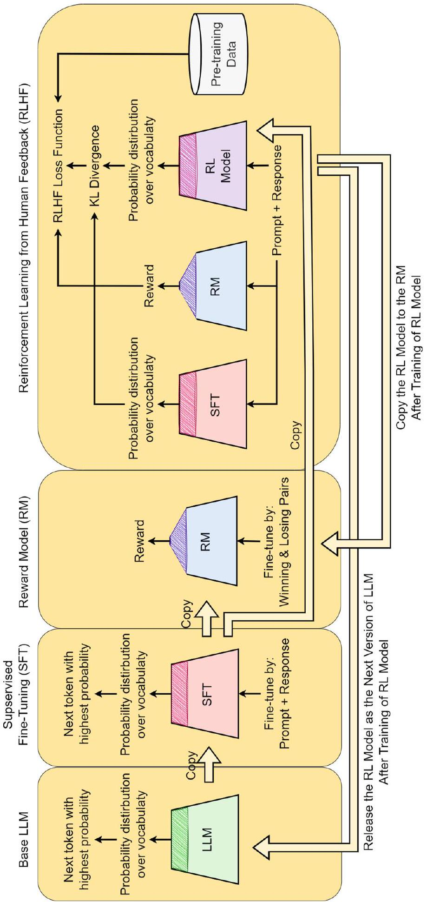
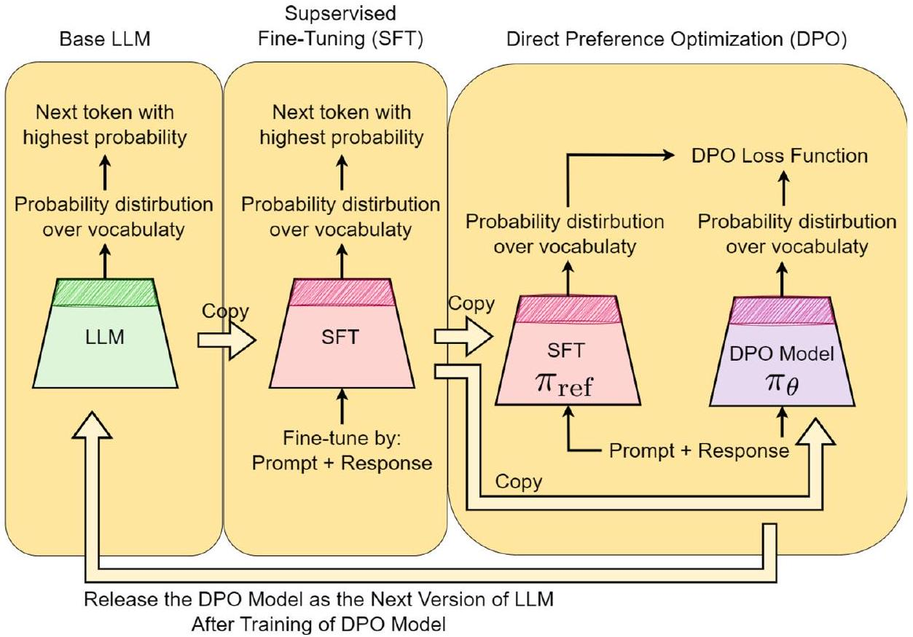

章節定位與 BERT vs GPT 總覽
▼直覺：兩大 Transformer 雙雄的分工
本章承接 Chap. 9 的 Transformer，介紹兩個最重要的語言模型家族：BERT 與 GPT。它們都是 Transformer 架構，但一個專攻「理解上下文」，一個專攻「生成下一個詞」。
- BERT（Bidirectional Encoder Representations from Transformers）由 Google 在 2018 年提出，本質上是多層 Transformer encoder 的堆疊。
- GPT（Generative Pre-trained Transformer）由 OpenAI 在同一年提出，本質上是多層 Transformer decoder 的堆疊。
兩者的核心目標不同：
- BERT 學的是「上下文相關的詞向量」，適合情感分析、問答、自然語言推論等理解任務。
- GPT 學的是「給定前文後預測下一個詞」，適合生成文字、對話、續寫等生成任務。
到了 2025 年，BERT 已不再是最高水準，但仍是許多 NLP 任務的基礎；而 GPT 架構則是當代大多數大型語言模型（LLM）的骨幹。
English recap: encoder vs decoder
BERT uses stacked Transformer encoders to produce context-aware embeddings. GPT uses stacked Transformer decoders to generate text autoregressively. Most modern LLMs follow the GPT-style decoder-only design.
本章路線圖
- §2 BERT：結構、遮罩訓練、微調與變體。
- §3 GPT：結構、因果語言建模、Chain-of-Thought、家族演進。
- §4 T5：統一的 text-to-text 框架。
- §5 重要 LLM 生態系。
- §6 為什麼 LLM 有效。
- §7–§9 Alignment：RLHF 與 DPO。
🤖 AI 生圖可用：重繪此示意圖的提示詞（結構化）
WHAT（骨架）: 左右兩座高塔，左邊紫色「BERT」由三個 Encoder Block 堆疊而成，塔頂到塔底有一條藍色雙向箭頭標示「雙向注意力」；右邊紅色「GPT」由三個 Decoder Block 堆疊而成，塔頂到塔底有一條紅色單向右箭頭標示「只能往左看」。兩塔中間以虛線連接，寫「同為 Transformer，目標與方向相反」。底部藍底區塊列 BERT 的理解任務，黃底區塊列 GPT 的生成任務。 WHY（因果或反直覺）: BERT 與 GPT 看起來都是「堆疊 Transformer」，但因為一個用 encoder、一個用 decoder，前者能看全文所以適合理解，後者只能看前文所以適合生成。反直覺：同樣的基礎元件，方向一換就從「閱讀器」變成「寫手」。 MUST show（必備要素）: ① 兩座塔的顏色與區塊類型不同（Encoder vs Decoder）；② BERT 的雙向箭頭 vs GPT 的單向左箭頭；③ 中間虛線強調同構但目標相反；④ 底部對比兩類任務；⑤ 標註 Google/OpenAI 來源。 AVOID（禁止）: 不要把兩座塔畫得一模一樣；不要只用文字標「BERT/GPT」而沒有 attention 方向對比；不要畫成 RNN 或 CNN 架構。 STYLE: flat vector, viewBox 720×360, white background, purple vs red towers, blue/yellow role blocks, Chinese + English labels, clean arrows, no shadows.
BERT 與 GPT 最根本的架構差異是什麼？
BERT 的主要設計目標是什麼？
GPT 的主要設計目標是什麼？
到了 2025 年，大多數最先進的 LLM 主要採用哪種架構風格？
BERT 網路結構：encoder stack
▼直覺：BERT 就是一堆 Transformer encoder 疊起來
BERT 的網路結構非常單純：它把 Chap. 9 介紹的 Transformer encoder block 一層一層往上疊。每一層 encoder 都包含 multi-head self-attention 與 feed-forward network，並搭配 layer normalization 與 residual connection。
因為使用 encoder，BERT 在計算每個詞的表示時，可以同時看左邊（已經出現）與右邊（尚未出現）的所有詞，這就是「雙向」（bidirectional）的來源。

English recap: BERT is stacked encoders
BERT is essentially a stack of Transformer encoders. Each encoder block uses multi-head self-attention, allowing every token to attend to all other tokens in the sentence.
輸入與輸出
- 輸入：一個句子（會在前面加上特殊的
[CLS]token，並用[SEP]分隔句子）。 - 輸出：每個 token 對應一個上下文相關的向量表示。
這些向量可以接下游任務的分類層，例如情感分析或問答。
- Encoder-only 架構：只看 encoder，沒有 decoder。
- 雙向注意力：每個詞都能看到整句話的上下文。
- 適合理解任務：分類、問答、命名實體辨識等。
🤖 AI 生圖可用：重繪此示意圖的提示詞（結構化）
WHAT（骨架）: 頂部灰底長條顯示輸入句子「[CLS] Money is in the bank [SEP]」，單詞 bank 用紅點標示。中間是三個堆疊的紫色 Encoder Layer 方塊。bank 透過紅色虛線進入堆疊後，內部有藍色左箭頭與綠色右箭頭，表示 bank 同時關注左邊與右邊的上下文。底部綠底長條寫「每個 token 對應一個上下文相關向量」。 WHY（因果或反直覺）: 傳統詞向量一個詞只有一個向量，但 BERT 讓每個詞的表示由整句話決定。反直覺：bank 的「銀行」與「河岸」意思不同，卻共用同一個詞；BERT 用雙向注意力讓同一詞在不同句子中長出不同向量。 MUST show（必備要素）: ① 輸入句子與 [CLS]/[SEP]；② 三層 encoder 堆疊；③ 針對 bank 的雙向注意力箭頭；④ 輸出為每個 token 一個向量；⑤ 用顏色區分左/右 attention 方向。 AVOID（禁止）: 不要只畫一個大方塊寫「BERT」；不要讓 attention 箭頭只朝單一方向；不要把輸出畫成單一向量而忽略每個 token 都有輸出；不要使用 LaTeX 反斜線。 STYLE: flat vector, viewBox 720×360, white background, purple encoder stack, blue/green bidirectional arrows, red highlighted token, Chinese + English labels.
BERT 的網路主要由什麼組成？
BERT 的注意力機制為什麼被稱為雙向（bidirectional）？
BERT 適合哪一類任務？
BERT 輸入中放在句子最前面的特殊 token 是什麼？
遮罩語言建模與雙向語境嵌入
▼直覺：把句子挖空，讓模型根據上下文猜回來
BERT 的訓練任務稱為遮罩語言建模（Masked Language Modeling, MLM）。做法很直觀：隨機遮住輸入句子中約 15% 的詞，然後要求模型根據上下文預測被遮住的詞是什麼。
因為模型必須同時參考被遮詞左邊與右邊的詞才能猜對，BERT 學到的 embedding 自然就是上下文相關的。例如 "bank" 在 "Money is in the bank" 與 "Some plants grow on the banks of rivers" 這兩句中會有不同的 embedding。

English recap: MLM learns bidirectional context
BERT masks 15% of input tokens and trains the model to predict them. Because the prediction uses both left and right context, BERT embeddings are context-aware, unlike static Word2Vec or GloVe embeddings.
自監督學習
這個任務不需要人工標籤，因為被遮住的詞本身就是「答案」。因此 BERT 可以在大量未標記的網路文本上進行自監督學習（self-supervised learning）。
- 15% 的 token 會被隨機遮罩。
- 模型根據雙向上下文預測被遮住的詞。
- 同樣的詞在不同句子中會有不同的 embedding。
- 訓練資料只需原始文本，不需人工標註。
🤖 AI 生圖可用：重繪此示意圖的提示詞（結構化）
WHAT（骨架）: 頂部灰底長條顯示句子「Money is in the [MASK].」，[MASK] 用紅色粗體標示，並註明「15% 的 token 被遮住」。從上下文詞（Money、is in the、句點）有藍色箭頭指向中間紫色預測框，框內寫「預測 [MASK] = bank」。底部左右並排兩個區塊：左藍底「Money is in the bank. → bank = 銀行」，右綠底「on the banks of rivers → bank = 河岸」，中間灰色箭頭標「同一詞，不同向量」。 WHY（因果或反直覺）: 傳統 embedding 一詞一個向量，無法區分多義詞。BERT 透過遮罩任務強迫模型根據左右文猜詞，因此同一個 bank 在不同句子會長出不同向量。反直覺：模型不是背字典，而是從「填空」中學會語境。 MUST show（必備要素）: ① [MASK] 被隨機遮住；② 15% 比例標示；③ 上下文詞指向 [MASK] 的注意力箭頭；④ 預測結果框；⑤ 兩個 bank 例句的對比與不同向量表示。 AVOID（禁止）: 不要只畫一個被遮住的詞而沒有上下文箭頭；不要把兩個 bank 例句畫成相同顏色或相同向量；不要使用 LaTeX 反斜線。 STYLE: flat vector, viewBox 720×360, white background, grey input bar, purple prediction box, blue/green context blocks, clean arrows, Chinese + English labels.
怎麼操作：調整遮罩比例後按「重新遮罩」。
觀察什麼：比例太低時幾乎沒有挑戰；比例太高時上下文不足，模型難以學習。BERT 預設約 15%。
正確基準：被遮罩 token 數 = round(N * rate)。
BERT 的主要預訓練任務是什麼？
BERT 通常遮罩多少比例的 token？
遮罩語言建模為什麼能學到上下文相關的 embedding？
與 Word2Vec/GloVe 相比，BERT embedding 的主要優勢是什麼？
BERT 微調與 [CLS] 句子嵌入
▼直覺：把預訓練好的語言理解器接上你的任務
BERT 預訓練完成後，通常不會從頭訓練，而是透過遷移學習（transfer learning）進行微調。做法是在 BERT 頂端加上一層或多層任務專用的輸出層，然後用帶標籤的資料進行訓練。
微調時有兩種策略：
- 凍結 BERT 權重：只訓練新加的輸出層，速度快但效果可能較差。
- 整體微調：讓 BERT 所有層都透過反向傳播更新，效果通常更好。
[CLS] token 的妙用
BERT 在每個句子開頭會插入一個特殊的 [CLS] token。這個 token 經過所有 Transformer 層後，會吸收整句的資訊。對於句子層級任務（如情感分析、垃圾信偵測），我們可以直接拿 [CLS] 的最終隱藏狀態當作句子嵌入，再接上分類器。
English recap: fine-tune BERT for downstream tasks
Users typically add task-specific layers on top of pre-trained BERT and fine-tune. The final hidden state of the special [CLS] token is commonly used as a sentence representation for classification.
- Transfer learning: use a pre-trained BERT and adapt it to specific tasks.
- [CLS] token: inserted at the beginning of the input, used as sentence embedding.
- Fine-tuning can freeze BERT or update all weights.
🤖 AI 生圖可用：重繪此示意圖的提示詞（結構化）
WHAT（骨架）: 左側紫色大方塊「Pre-trained BERT」，內部標示「已學會語言知識（可凍結或微調）」。紅色箭頭從 BERT 頂端指向右側藍色「新任務輸出層（分類器 / 標籤器）」，箭頭上標「[CLS] 向量」。下方紫色虛線箭頭寫「整體微調：BERT + 新任務層一起更新」。右側上下兩個方案區塊：黃底「方案 A：凍結 BERT，只訓練新任務層」；綠底「方案 B：整體微調，BERT 與新任務層一起更新」。 WHY（因果或反直覺）: BERT 預訓練需要大量資料與算力，一般使用者無法從頭訓練。遷移學習讓我們把通用語言知識「搬」到特定任務。反直覺：有時候把整個 BERT 一起微調，比只訓練新任務層效果更好，因為 BERT 內部表示也會適應新任務。 MUST show（必備要素）: ① Pre-trained BERT 區塊；② [CLS] 向量流向新任務層；③ 新任務層的具體例子（分類器/標籤器）；④ 凍結與整體微調兩種方案對比；⑤ 不用從頭訓練的遷移學習概念。 AVOID（禁止）: 不要畫成 BERT 直接輸出最終答案而沒有新任務層；不要讓凍結與微調看起來沒有差別；不要遺漏 [CLS] token；不要使用 LaTeX 反斜線。 STYLE: flat vector, viewBox 720×360, white background, purple BERT block, blue task head, yellow/green option blocks, red [CLS] arrow, Chinese + English labels.
BERT 在下游任務中通常如何使用？
[CLS] token 的主要用途是什麼？
微調 BERT 時，「凍結 BERT 權重」代表什麼？
為什麼整體微調通常比凍結 BERT 效果更好？
BERT 變體：參數量與蒸餾
▼直覺：從超大模型到可塞進手機的小模型
原始 BERT 有兩個主要尺寸：
- BERT Base：12 層 encoder、768 維 hidden、12 個 attention heads，共 1.1 億參數。
- BERT Large：24 層 encoder、1024 維 hidden、16 個 attention heads，共 3.4 億參數。
雖然 BERT 已經很強，但對手機等嵌入式裝置來說仍然太大。因此研究者提出許多輕量版：
- DistilBERT：透過知識蒸餾（knowledge distillation）把 BERT 變小變快。
- TinyBERT、SmallBERT：更極端的輕量版本。
- RoBERTa：不是變小，而是用更多資料、更大的 batch、動態遮罩與更長訓練時間重新訓練 BERT，提升性能。
此外還有領域專用版本，例如 BioBERT（醫療）、FinBERT（金融）、SciBERT（科學文獻）、ProteinBERT（蛋白質序列）等。
- BERT Base：110M 參數；BERT Large：340M 參數。
- DistilBERT/TinyBERT/SmallBERT：輕量版，適合資源受限裝置。
- RoBERTa：優化訓練流程的 BERT 變體。
- Domain-specific BERT：針對特定領域資料預訓練。
🤖 AI 生圖可用：重繪此示意圖的提示詞（結構化）
WHAT（骨架）: 畫面中央是三根高度不同的長條：左藍底「Base」最矮（110M，12L/768D/12H），中紫底「Large」最高（340M，24L/1024D/16H），右黃底「DistilBERT」比 Base 更矮（輕量/快速）。從 Large 有一條橙色虛線箭頭指向 DistilBERT，標「知識蒸餾」。右上角綠底區塊寫「RoBERTa：更多資料 + 動態遮罩 + 更大 batch + 更久訓練」。 WHY（因果或反直覺）: 模型越大能力越強，但也越難部署。知識蒸餾把大模型的行為「教」給小模型，讓它在手機等資源受限裝置上也能跑。反直覺：RoBERTa 不是把模型變小，而是重新優化訓練流程，證明 BERT 還有性能空間。 MUST show（必備要素）: ① Base 與 Large 的參數與尺寸對比；② DistilBERT 明顯更小；③ 知識蒸餾箭頭從 Large 指向小模型；④ RoBERTa 的訓練優化四要素；⑤ 用高度視覺化規模差異。 AVOID（禁止）: 不要只畫數字列表而沒有高度對比；不要讓 DistilBERT 看起來比 Large 還大；不要把 RoBERTa 與蒸餾混為一談；不要使用 LaTeX 反斜線。 STYLE: flat vector, viewBox 720×360, white background, blue/purple/yellow bars, orange dashed distillation arrow, green RoBERTa block, Chinese + English labels.
怎麼操作：拉動詞表、隱藏維度、層數、序列長度。
觀察什麼：隱藏維度 H 對參數量影響最大（與 $H^2$ 成正比）；BERT Base（L=12,H=768,V=30522）約 1.1 億。
正確基準：總參數 = V*H + S*H + L*(12*H^2 + 13*H)。
BERT Base 大約有多少參數？
BERT Large 大約有多少參數？
DistilBERT 主要透過什麼技術讓 BERT 變小？
RoBERTa 與 BERT 的主要差異是什麼？
GPT 結構與因果語言建模
▼直覺：BERT 是雙向理解，GPT 是單向生成
GPT 本質上是多層 Transformer decoder 的堆疊。與完整 Transformer decoder 不同的是，GPT 移除了 cross-attention（因為沒有 encoder 輸出可以參考），只保留 masked multihead self-attention 與 feed-forward network。
為了強迫模型只能「往左看」，GPT 使用遮罩自注意力（masked self-attention）：每個 token 只能關注自己與之前的 token，不能看到未來的詞。
因果語言建模
GPT 的訓練目標是因果語言建模（causal / autoregressive language modeling）：給定 $x_{1},\dots,x_{t-1}$，預測下一個 token $x_{t}$。因為只需要原始文本，這也是一種自監督學習。
- GPT 是 decoder-only 模型。
- Masked self-attention 限制每個 token 只能看到左邊的上下文。
- 訓練目標是根據前文預測下一個 token。
- 適合文字生成、對話、續寫等任務。
🤖 AI 生圖可用：重繪此示意圖的提示詞（結構化）
WHAT（骨架）: 頂部一排紅色圓圈代表 token：A、storm、was、approaching、?。從每個 token 向下發出藍色箭頭，表示它們關注自己與之前的 token（形成下三角 attention）。灰色虛線箭頭從早期 token 指向後期 token，表示「禁止偷看未來」。底部紅字寫「灰色虛線 = 禁止偷看未來」。右側藍底框寫「根據前文預測下一個詞 P(? | A storm was approaching)」。 WHY（因果或反直覺）: 生成文字時，模型不能先看到還沒生成的詞，否則就作弊。GPT 用因果遮罩強迫 attention 只看左邊，讓它成為真正的「接龍」模型。反直覺：這種「只能往左看」的限制，反而讓 GPT 學會從頭到尾生成連貫段落。 MUST show（必備要素）: ① 一排 token 圓圈；② 下三角形的藍色 attention 箭頭（每個 token 只能看到過去）；③ 灰色虛線表示被遮罩的未來方向；④ 明確標示「禁止偷看未來」；⑤ 右側預測下一個詞的機率框。 AVOID（禁止）: 不要畫成所有 token 互相連接；不要讓箭頭方向混亂；不要遺漏因果遮罩的禁止符號；不要使用 LaTeX 反斜線。 STYLE: flat vector, viewBox 720×360, white background, red token circles, blue attention arrows, grey forbidden dashed arrows, blue prediction box, Chinese + English labels.
GPT 主要由什麼組成？
GPT 的 decoder block 與完整 Transformer decoder 相比少了什麼？
GPT 為什麼使用 masked self-attention？
GPT 的訓練目標是什麼？
Chain-of-Thought Prompting
▼直覺：不要直接問答案，要示範「怎麼想」
2022 年提出的 Chain-of-Thought（CoT）prompting 發現：只要在 prompt 中提供「一步步推理」的範例，LLM 就會模仿這種風格，在回答前先把中間思考過程寫出來，複雜推理任務的表現會大幅提升。
例如標準 prompt：
- Question: If there are 3 apples and you eat 1, how many are left?
- Answer: 2.
CoT prompt 則會把推理過程也寫出來：
- Question: If there are 3 apples and you eat 1, how many are left?
- Answer: There are 3 apples. If you eat 1, then $3-1=2$ apples are left. So, the answer is 2.
為什麼有效？
LLM 本來就在大量文本中看過「人類解釋推理過程」的寫法。當 prompt 提供類似的結構時，模型就會觸發這種「自言自語推理」的行為。CoT 對數學應用題、邏輯謎題特別有幫助，而且對較大的模型效果更明顯。
- CoT prompting 在 prompt 中給出中間推理步驟的範例。
- 模型會模仿這種風格，先思考再回答。
- 對數學、邏輯等複雜推理任務特別有效。
- 效果隨模型規模變大而更明顯。
🤖 AI 生圖可用：重繪此示意圖的提示詞（結構化）
WHAT（骨架）: 左右兩個並排面板。左灰底「Standard Prompt」顯示問題與直接答案；右紫底「Chain-of-Thought Prompt」顯示同一問題，但答案包含三步推理：「There are 3 apples. If you eat 1, then 3-1=2. So the answer is 2.」。左側下方灰色箭頭標「直接給答案」，右側綠色箭頭標「示範推理步驟」。底部黃底長條寫「CoT 讓 LLM 『自言自語』推理，對複雜問題特別有效」。 WHY（因果或反直覺）: LLM 從大量文本中學過人類解釋思考的寫法，只要 prompt 給出幾個「先推理再回答」的範例，它就會模仿。反直覺：對於簡單問題直接給答案反而沒差，但對數學應用題，「逼它寫出步驟」能大幅提升正確率。 MUST show（必備要素）: ① 兩種 prompt 並排對比；② Standard 只有 Q/A；③ CoT 有完整中間步驟；④ 箭頭與標語區分「直接答案」與「推理示範」；⑤ 底部結論強調對複雜問題有效。 AVOID（禁止）: 不要只畫一種 prompt；不要讓 CoT 面板與 Standard 面板看起來相同；不要省略具體數學步驟；不要使用 LaTeX 反斜線。 STYLE: flat vector, viewBox 720×360, white background, grey vs purple panels, green reasoning arrow, yellow conclusion bar, Chinese + English labels.
Chain-of-Thought prompting 的核心思想是什麼？
CoT prompting 對哪類任務幫助最大？
CoT prompting 的效果與模型規模有什麼關係？
下列哪一種 prompt 屬於 CoT prompting？
GPT 家族演進
▼直覺：從 1 億到千億，生成模型一路長大
GPT 家族在幾年內快速演進，規模與能力都大幅提升：
- GPT-1（2018）：12 層 decoder-only Transformer，1.17 億參數，在 BookCorpus 上訓練，證明無監督預訓練的威力。
- GPT-2（2019）：最大版本 48 層，15 億參數，在 WebText（約 40 GB 網路文本）上訓練，能產生連貫的多段文字。
- GPT-3（2020）：最大版本 96 層，1750 億參數，在 570 GB 多語言文本上訓練，展現強大的 few-shot 與 prompt engineering 能力。
- GPT-4（2023）：OpenAI 未公開細節，但確定是多模態模型，可接受文字與圖片輸入、產生文字輸出。
- GPT-4o / o1 / o3 / o4-mini：進一步整合 Chain-of-Thought 訓練與多模態能力。
- GPT-1: 117M params, BookCorpus.
- GPT-2: 1.5B params, WebText 40GB.
- GPT-3: 175B params, 570GB multilingual text.
- GPT-4: multimodal (text + image input, text output).
🤖 AI 生圖可用：重繪此示意圖的提示詞（結構化）
WHAT（骨架）: 一條水平時間軸從左到右標「時間 →」。軸上有四個高度遞增的方塊：左藍底「GPT-1 117M」最矮；紫底「GPT-2 1.5B WebText」較高；紅底「GPT-3 175B Few-shot」更高；綠底「GPT-4 多模態 Text + Image」最高。每個方塊下方用圓點連接時間軸。頂部有一條橙色曲線從左下往右上，標「規模與能力持續上升」。 WHY（因果或反直覺）: GPT 家族在短短幾年內參數量成長了數千倍，不只是變大，訓練資料與能力也跟著擴展。反直覺：GPT-3 的 175B 參數雖然看起來會過擬合，但因為資料量也極大，反而展現出強大的 few-shot 與湧現能力。 MUST show（必備要素）: ① 水平時間軸；② 四個模型方塊高度隨參數量遞增；③ 每個方塊標註參數量或特色；④ GPT-4 標註多模態；⑤ 上升曲線強調規模與能力趨勢。 AVOID（禁止）: 不要把四個模型畫成同樣大小；不要讓時間軸方向模糊；不要遺漏 GPT-4 的多模態特色；不要使用 LaTeX 反斜線。 STYLE: flat vector, viewBox 720×360, white background, horizontal timeline, ascending colored blocks, orange growth curve, Chinese + English labels.
GPT-1 大約有多少參數？
GPT-2 的最大版本大約有多少參數？
GPT-3 的最大版本大約有多少參數？
GPT-4 相較於 GPT-3 的一項重要新能力是什麼？
T5：統一的 text-to-text 框架
▼直覺：所有 NLP 任務都變成「輸入文字 → 輸出文字」
T5（Text-to-Text Transfer Transformer）在 2020 年提出，結合了 BERT 的 encoder 與 GPT 的 decoder，形成完整的 encoder-decoder 架構。它的核心創見是：把各種 NLP 任務都轉換成 text-to-text 問題。
例如：
- 情感分析：輸入
"I like this product"，輸出"positive"。 - 翻譯：輸入
"I am a student"，輸出"Je suis étudiant"。
Sentinel token 與去噪訓練
T5 的無監督訓練類似 BERT：隨機遮蔽 15% 的 token，但不同的是被遮蔽的 token 會被替換成特殊的 sentinel token（如 <X>、<Y>），模型要生成被遮蔽的片段。這種方式讓 T5 學會把「有雜訊的輸入」轉換成「乾淨的輸出」。
- T5 使用完整的 encoder-decoder 架構。
- 所有任務統一為 text-to-text 格式。
- 無監督訓練使用 sentinel token 取代被遮蔽的 token 片段。
- 監督訓練在 GLUE/SuperGLUE 等 benchmark 上進行。
🤖 AI 生圖可用：重繪此示意圖的提示詞（結構化）
WHAT（骨架）: 左側畫兩個相連方塊：紫色「Encoder（理解輸入）」與紅色「Decoder（生成輸出）」，中間藍色箭頭表示資訊流向。右側上下兩個範例框：藍底「Sentiment」輸入 I like this product、輸出 positive；綠底「Translation」輸入 I am a student、輸出 Je suis étudiant。底部黃底長條寫「無監督訓練：15% token 被替換成 sentinel token」，並舉例「I like <X> product → 模型生成 <X> = this」。 WHY（因果或反直覺）: BERT 只能理解，GPT 只能生成，T5 說「為什麼不把所有任務都變成輸入文字、輸出文字？」這樣同一個模型就能做分類、翻譯、摘要。反直覺：sentinel token 不像 BERT 的 [MASK] 只遮一個詞，而是可以遮一整段，讓 decoder 學會生成完整片段。 MUST show（必備要素）: ① Encoder-Decoder 架構；② 兩個 text-to-text 任務範例；③ 統一框架的概念；④ sentinel token 的運作方式；⑤ 輸入與輸出都用純文字表示。 AVOID（禁止）: 不要只畫一個模型方塊；不要把任務範例畫成傳統分類箭頭；不要遺漏 sentinel token；不要使用 LaTeX 反斜線。 STYLE: flat vector, viewBox 720×360, white background, purple encoder / red decoder, blue/green example boxes, yellow sentinel bar, Chinese + English labels.
T5 的架構結合了什麼？
T5 的核心創見是什麼？
T5 的無監督訓練中，被遮蔽的 token 會被替換成什麼？
下列哪一項最適合用 T5 的 text-to-text 框架表示？
重要 LLM 生態系地圖
▼直覺：LLM 不只是 OpenAI，還有一整個開源與專有生態系
到了 2025 年，LLM 生態系已經非常豐富。除了 OpenAI 的 GPT 系列，還有：
- Meta：LLaMA 系列（7B/13B/70B/405B），開放權重，影響深遠。
- Google DeepMind：T5、PaLM、Gemini（多模態）。
- Anthropic：Claude 系列，強調安全性。
- Mistral AI：Mistral 7B、Mixtral 8×7B（Mixture-of-Experts, MoE）。
- Alibaba：Qwen 系列，Qwen3 是 235B 的 MoE 模型。
- DeepSeek：DeepSeek-V2/V3、DeepSeek-Coder、DeepSeek-R1（強化學習推理）。
- xAI：Grok 系列，Grok-1 是 314B 的 MoE 模型。
此外，Mamba 是 State Space Model（SSM）的代表，提供線性複雜度的長序列建模，是 Transformer 之外的另類架構。
- OpenAI: GPT、ChatGPT、GPT-4o/o1/o3。
- Meta: LLaMA/Alpaca/Code LLaMA。
- Google: PaLM/Gemini/T5。
- MoE: Mixtral、Grok、Qwen3。
- SSM: Mamba，適合長上下文。
🤖 AI 生圖可用：重繪此示意圖的提示詞（結構化）
WHAT（骨架）: 中央紫色圓圈寫「LLM Ecosystem」。周圍六個彩色方塊：左上紅底 OpenAI（GPT/ChatGPT）、左中藍底 Meta（LLaMA）、左下綠底 Google（PaLM/Gemini）、右上黃底 Mistral（Mixtral MoE）、右中紫底 DeepSeek（V3/R1）、右下青綠底 Mamba（SSM 非 Transformer）。每個方塊以灰色線連到中央。底部兩個小標籤：黃底「MoE = 稀疏專家」、青綠底「SSM = 長序列線性複雜度」。 WHY（因果或反直覺）: LLM 不只是 OpenAI 一家，開源社群（Meta、DeepSeek、Mistral）與非 Transformer 架構（Mamba）也快速發展。反直覺：MoE 雖然總參數量巨大，但每次只啟用部分專家，因此推理成本並未等比例增加；Mamba 則挑戰了「語言模型必須用 attention」的假設。 MUST show（必備要素）: ① 中央 LLM Ecosystem 樞紐；② 至少六個代表性模型家族；③ 專有（OpenAI/Google）與開源（Meta/DeepSeek/Mistral）並存；④ MoE 與 SSM 兩種技術路線標籤；⑤ 用連線表達生態系關係。 AVOID（禁止）: 不要只列文字清單而無幾何佈局；不要讓所有方塊顏色相同；不要遺漏非 Transformer 的 Mamba；不要使用 LaTeX 反斜線。 STYLE: flat vector, viewBox 720×360, white background, central purple hub, surrounding colored family blocks, grey connecting lines, Chinese + English labels.
LLaMA 系列是由哪家機構提出？
Mixtral 8×7B 使用什麼技術來提升效率？
Mamba 屬於哪一類非 Transformer 架構？
RAG（Retrieval-Augmented Generation）包含哪兩個主要組件？
為何 LLM 有效：六條研究路線
▼直覺：模型變大、資料變多，但我們仍不完全懂為什麼它這麼厲害
傳統 PAC 學習理論難以解釋 LLM 的泛化能力，因此研究者提出多條研究路線：
- 線性表示假說（Linear representations）：雖然網路整體非線性，但輸入到輸出之間存在近似線性的路徑。
- 機制可解釋性 / 電路分析（Mechanistic interpretability）：反向工程模型內部電路，研究它如何執行複製、歸納、語法偵測等行為。
- 特徵與神經元疊加（Feature / neuron superposition）：許多概念重疊存放在同一群神經元中。
- 因果追蹤（Causal tracing）：追蹤模型內部哪些部分負責特定輸出，例如事實知識存在哪裡。
- 探針與表示幾何（Probing & representational geometry）：用統計工具研究隱藏狀態編碼了哪些語言特徵。
- 安全性與多語義性（Security & polysemanticity）：研究單一神經元可同時代表多個概念的現象，以及模型內部信念與輸出不一致的問題。
- Scaling laws：模型越大、資料越多，性能越可預測地提升。
- In-context learning：模型能從 prompt 中即時學習新任務。
- Superposition：多個概念共享同一組神經元。
- Mechanistic interpretability：拆解模型內部電路。
🤖 AI 生圖可用：重繪此示意圖的提示詞（結構化）
WHAT（骨架）: 中央紫色大圓圈寫「Why do LLMs work?」。周圍六個彩色小方塊分別代表：Linear Representations（藍）、Mechanistic Circuits（紅）、Superposition（綠）、Causal Tracing（黃）、Probing Geometry（紫）、Polysemanticity（青綠）。每個方塊以灰色線連到中央圓圈。底部寫「傳統 PAC 理論解釋不了，研究者從多條路線拆解 LLM」。 WHY（因果或反直覺）: LLM 能在大量未見資料上泛化，傳統統計學習理論難以解釋，因此需要從表示、電路、幾何、因果等角度反向工程。反直覺：一個「黑箱」模型內部可能存在可解釋的線性路徑與專門化電路。 MUST show（必備要素）: ① 中央問題樞紐；② 六條研究路線名稱與顏色區分；③ 連線表示這些方向都在嘗試回答同一問題；④ 底部強調傳統理論的不足；⑤ 每個名稱簡潔可讀。 AVOID（禁止）: 不要把六條路線寫成純文字段落；不要讓方塊互相重疊；不要遺漏「傳統 PAC 理論解釋不了」的反直覺；不要使用 LaTeX 反斜線。 STYLE: flat vector, viewBox 720×360, white background, central purple circle, six surrounding colored blocks, grey connecting lines, Chinese + English labels.
下列哪一項是解釋 LLM 泛化能力的主要研究方向？
「superposition」指的是什麼現象？
Mechanistic interpretability 的目標是什麼？
Causal tracing 常用來做什麼？
Alignment 的挑戰與定義
▼直覺：LLM 只會「猜下一個詞」，不一定會「照你說的做」
LLM 的核心訓練目標是預測下一個 token，這讓它擅長產生統計上合理的文字，但並不保證它會：
- 遵循使用者指令
- 不編造事實（hallucination）
- 不產生偏見或有毒內容
- 符合人類價值觀
Alignment（對齊）就是調整模型輸出，使其符合使用者意圖與倫理標準，而不只是「預測最可能的下一個詞」。
Alignment 的四大焦點
- Learning from human feedback：從人類互動中學習。
- Training to follow instructions：訓練模型遵循指令。
- Evaluating AI harms：評估模型輸出的風險。
- Modifying behavior to mitigate harms：調整行為以減少負面影響。
🤖 AI 生圖可用：重繪此示意圖的提示詞（結構化）
WHAT（骨架）: 左右兩個方塊：左紅底「預訓練目標：Next-token，根據網路文本預測下一個詞，統計上合理 ≠ 符合人意圖」；右綠底「使用者目標：Helpful & Safe，遵循指令、不幻覺、無偏見，符合價值與意圖」。中間灰色虛線箭頭標「錯位」。底部紅底大框標「常見錯位問題」，列出四個紅點：幻覺、不聽指令、偏見與有毒內容、洩漏個資或危險資訊。 WHY（因果或反直覺）: LLM 只是被訓練來「接龍」，並沒有內建「要聽話、要安全」的目標。反直覺：一個能流暢回答問題的模型，可能同時在編造事實或複製偏見，因為它的目標函數根本不在乎真假或道德。 MUST show（必備要素）: ① 左邊 next-token 目標與右邊使用者目標的對比；② 中間明確標示「錯位」；③ 底部列出常見錯位問題；④ 紅色表示問題、綠色表示理想目標；⑤ 強調目標函數不一致是根本原因。 AVOID（禁止）: 不要把兩個目標畫成完全一樣；不要只列問題而不強調目標錯位；不要讓幻覺等問題看起來是獨立現象而與目標無關；不要使用 LaTeX 反斜線。 STYLE: flat vector, viewBox 720×360, white background, red vs green objective blocks, grey dashed gap arrow, red warning problem box, Chinese + English labels.
LLM 的核心訓練目標是什麼？
Alignment 的主要目標是什麼？
下列哪一項是 LLM 常見的未預期行為？
Alignment 的四大焦點不包括下列哪一項？
簡單 alignment 策略
▼直覺：在動用 RLHF 之前，可以先做兩件簡單的事
在進入複雜的 RLHF 或 DPO 之前，有兩種相對簡單的 alignment 策略：
1. 預訓練資料過濾（Filtering pretraining datasets）
直接把不想要的内容從訓練資料中移除，例如仇恨言論、錯誤資訊、個資等。這就像「如果不想讓小孩學髒話，就先別讓他聽到髒話」。
但資料過濾並不足夠，因為模型仍可能從看似正常的上下文泛化出有毒模式。
2. 價值導向微調（Fine-tuning on value-targeted datasets）
用強調特定價值觀的資料集進行微調。例如希望模型回答環保相關問題，就用大量環保内容微調。這就像「給小孩讀道德故事，希望他學會道德」。
- Filtering：從源頭移除有害資料。
- Value-targeted fine-tuning：用特定價值觀資料調整模型。
- 兩者通常需要與 RLHF/DPO 等更強方法搭配使用。
🤖 AI 生圖可用：重繪此示意圖的提示詞（結構化）
WHAT（骨架）: 上半部是「原始預訓練語料」紅底框（含仇恨/錯誤/有毒內容），經過黃底「過濾器」移除有害文件，變成綠底「乾淨語料」。下半部左藍底「價值導向微調」框寫「用強調環保/道德/安全的資料集」，藍色箭頭指向右紫底「更對齊的模型」框，框內寫「仍需 RLHF/DPO 進一步強化；簡單策略只是第一道防線」。 WHY（因果或反直覺）: 最簡單的 alignment 就是從源頭減少有害內容，以及用目標價值的資料微調。反直覺：單靠資料過濾並不足夠，模型仍可能從正常上下文泛化出有毒模式，所以通常還要搭配 RLHF/DPO。 MUST show（必備要素）: ① 原始語料 → 過濾器 → 乾淨語料的流程；② 過濾器移除有害文件；③ 價值導向微調資料；④ 最終模型仍需更強 alignment；⑤ 兩條簡單策略並列呈現。 AVOID（禁止）: 不要把過濾與微調混為一個步驟；不要讓「乾淨語料」看起來能完全解決 alignment；不要遺漏「仍需 RLHF/DPO」的結論；不要使用 LaTeX 反斜線。 STYLE: flat vector, viewBox 720×360, white background, red/green/yellow pipeline, blue value-tuning block, purple aligned model block, Chinese + English labels.
過濾預訓練資料的主要目的是什麼？
價值導向微調的作用是什麼？
下列哪一項是資料過濾的局限？
簡單 alignment 策略通常需要與什麼方法搭配？
RLHF 前兩步：SFT 與 Reward Model
▼直覺：先教模型怎麼對話，再訓練一個「評分老師」
RLHF（Reinforcement Learning from Human Feedback）分為三步，這一節講前兩步。
第一步：Supervised Fine-Tuning（SFT）
用人類撰寫的「prompt + 理想回應」配對資料，微調預訓練好的 GPT 模型。這讓模型從「會接龍」變成「會對話」。
提示類型包括：plain、few-shot、user-based；任務類型包括腦力激盪、分類、摘要、翻譯、問答等。
第二步：Reward Model（RM）
SFT 模型對同一個 prompt 產生多個回應後，人類標註者會比較這些回應，告訴模型哪個比較好。例如 4 個回應可配成 $C(4,2)=6$ 對。
RM 的架構是從 SFT 模型複製一份，去掉最後的 softmax 層，換成一個輸出實數值的神經元。它的損失函數是：
$$ \underset{\theta}{\operatorname{minimize}} \mathcal{L}(\theta):=-\mathbb{E}\left[\log \left(\sigma\left(r_{w}-r_{l}\right)\right)\right]. \tag{1} $$
其中 $r_{w}$ 與 $r_{l}$ 分別是「較好回應」與「較差回應」的分數。這個損失會讓 RM 學會給好回應高分、壞回應低分。

🤖 AI 生圖可用：重繪此示意圖的提示詞（結構化）
WHAT（骨架）: 從左到右的流程圖：藍底「Prompts（人類撰寫答案）」→ 紫底「SFT Model（會對話的 LLM）」→ 四個小色塊代表「同一 prompt 產生多個回應」→ 黃底「人類標註者（兩兩比較分出勝負）」→ 綠底「Reward Model（輸入回應 → 輸出分數）」。底部灰底長條寫「Reward Model Loss：-E[ log σ( r_w - r_l ) ]」，並註解「讓勝出回應分數高、落敗回應分數低」。 WHY（因果或反直覺）: 先讓模型學會對話格式，再訓練一個「評分老師」來判斷哪個回應比較好。反直覺：Reward Model 並不是直接告訴模型怎麼改，而是先把人類偏好壓縮成一個純量分數，為後續 RL 提供目標。 MUST show（必備要素）: ① SFT 階段的人類撰寫答案；② 同一 prompt 多個回應；③ 人類兩兩比較；④ Reward Model 輸出純量分數；⑤ Loss 公式用純文字/Unicode 呈現，無 LaTeX。 AVOID（禁止）: 不要讓流程順序混亂；不要遺漏「多個回應 → 成對比較」的關鍵步驟；不要把 Reward Model 畫成輸出文字而不是分數；不要使用 LaTeX 反斜線。 STYLE: flat vector, viewBox 720×360, white background, blue/purple/yellow/green pipeline blocks, grey formula bar, Chinese + English labels.
怎麼操作：拉動 r_w 與 r_l 滑桿。
觀察什麼：當 r_w 明顯大於 r_l，loss 快速下降並趨近 0；反之 loss 變大。
正確基準：loss = -log sigmoid(r_w - r_l)。
RLHF 的第一步是什麼？
若 SFT 模型對同一 prompt 產生 4 個回應，可形成多少對比較對？
Reward Model 的輸出是什麼？
Reward Model 的損失函數式 (1) 鼓勵什麼？
RLHF 的 policy gradient 與 KL 正則化
▼直覺：讓模型學會「討好評分老師」，但別走火入魔
RLHF 第三步是用強化學習進一步微調 SFT 模型。我們把 SFT 模型複製一份當作 RL model，讓它生成回應，再由 RM 給分，最後用 policy gradient 更新模型權重。
Policy gradient 目標
目標是最大化生成回應的期望獎勵：
$$ \underset{w}{\operatorname{maximize}} J(w):=\mathbb{E}_{x \sim p_{w}}[r(x)]. \tag{2} $$
更新規則：
$$ w \leftarrow w+\alpha \nabla_{w} J(w). \tag{3} $$
梯度可展開為：
$$ \nabla_{w} J(w)=\frac{1}{|D|} \sum_{D} \sum_{t=0}^{T} \nabla_{w} r(x) \log \left(p_{w}\left(x_{t} \mid x_{t-1}, x_{t-2}, \ldots\right)\right). \tag{4} $$
挑戰一：直接更新會讓模型亂講話
如果只最大化式 (2)，模型可能為了騙高分而產生無意義或離題的文字。解法是加入 KL 正則化，讓 RL model 不要離 SFT model 太遠：
$$ \underset{w}{\operatorname{maximize}} J(w):=\mathbb{E}_{x \sim p_{w}}\left[r(x)-\beta \operatorname{KL}\left(p_{w}(x) \| p_{\mathrm{SFT}}(x)\right)\right]. \tag{5} $$
挑戰二：忘記預訓練的 base LLM
alignment 過程可能讓模型忘記原本學到的通用知識。解法是再加分預訓練資料的對數似然：
$$ \underset{w}{\operatorname{maximize}} J(w):=\mathbb{E}_{x \sim p_{w}}\left[r(x)-\beta \operatorname{KL}\left(p_{w}(x) \| p_{\mathrm{SFT}}(x)\right)\right]+\gamma \mathbb{E}_{x \sim \text{pre-train}}\left[\log \left(p_{w}(x)\right)\right]. \tag{6} $$
- 式 (2)-(4)：用 policy gradient 最大化 reward。
- 式 (5)：加入 KL 正則化，防止模型偏離 SFT。
- 式 (6)：再加預訓練 likelihood，防止忘記 base LLM 知識。
🤖 AI 生圖可用：重繪此示意圖的提示詞（結構化）
WHAT（骨架）: 頂部一個循環：紫底「RL Model (copy of SFT)」→ 紅底「Generate response」→ 綠底「Reward Model」→ 綠色箭頭回到 RL Model，標「Policy gradient update」。底部兩個警告框：左紅底「挑戰 1：直接更新會亂講話，解法：KL 正則化，讓 RL 別離 SFT 太遠，+ β KL(p_RL || p_SFT)」；右黃底「挑戰 2：忘記 base LLM，解法：加預訓練 likelihood 項，+ γ E[log p_RL(pre-train)]」。 WHY（因果或反直覺）: 強化學習讓模型去「討好」Reward Model，但如果沒有約束，它可能會產生高分但無意義的文字。反直覺：為了讓模型變好，必須同時懲罼它「離 SFT 太遠」與「忘記預訓練知識」，也就是_alignment 不能走極端。 MUST show（必備要素）: ① RL → Generate → Reward → RL 的循環；② Policy gradient update 方向；③ 兩大挑戰區塊用紅/黃警示色；④ KL 正則化與預訓練 likelihood 兩個解法的文字；⑤ 公式用純文字/Unicode，無 LaTeX。 AVOID（禁止）: 不要只畫一個單向箭頭而沒有循環；不要讓兩大挑戰看起來是同一問題；不要把挑戰畫成文字清單而無警示區塊；不要使用 LaTeX 反斜線。 STYLE: flat vector, viewBox 720×360, white background, purple/red/green cycle, red/yellow challenge boxes, Chinese + English labels.
怎麼操作：調 w、r_A、r_B、beta、gamma、alpha。
觀察什麼：beta=0 且 gamma=0 時，policy 會為了高分而快速偏向 r_A；加大 beta 會把 policy 拉回 SFT 參考分布。
正確基準：梯度由 E[r]、-beta*KL、+gamma*pretrain 三項的解析導數組成，更新 $w \leftarrow w+\alpha\nabla J$。
RLHF 第三步的主要目標是什麼？
式 (5) 中加入 KL 正則化的原因是什麼？
式 (6) 多出來的第三項是為了解決什麼問題？
Policy gradient 中的 $w$ 代表什麼？
DPO：LLM 自己當 reward + 總結
▼直覺：不用另外訓練評分老師，模型自己就能比較好壞
Direct Preference Optimization（DPO）是一種比 RLHF 更簡單的 alignment 方法。它不需要單獨的 reward model，也不需要強化學習，直接用「成對偏好資料」進行監督式微調。
DPO 分兩步：
- 先進行 SFT，得到參考模型 $\pi_{\mathrm{ref}}$。
- 再初始化一個與 $\pi_{\mathrm{ref}}$ 相同的模型 $\pi_{\theta}$，最小化 DPO 損失：
$$ \underset{\theta}{\operatorname{minimize}} \mathcal{L}_{\mathrm{DPO}}(\theta):=-\mathbb{E}_{\left(\boldsymbol{x}, y_{w}, y_{l}\right)}\left[\log \sigma\left(\beta \log \left(\frac{\pi_{\theta}\left(y_{w} \mid \boldsymbol{x}\right)}{\pi_{\mathrm{ref}}\left(y_{w} \mid \boldsymbol{x}\right)}\right)-\beta \log \left(\frac{\pi_{\theta}\left(y_{l} \mid \boldsymbol{x}\right)}{\pi_{\mathrm{ref}}\left(y_{l} \mid \boldsymbol{x}\right)}\right)\right)\right]. \tag{7} $$
利用對數性質可改寫為：
$$ \mathcal{L}_{\mathrm{DPO}}(\theta)=-\mathbb{E}_{\left(\boldsymbol{x}, y_{w}, y_{l}\right)}\left[\log \sigma\left(\beta \log \left(\frac{\pi_{\theta}\left(y_{w} \mid \boldsymbol{x}\right) / \pi_{\mathrm{ref}}\left(y_{w} \mid \boldsymbol{x}\right)}{\pi_{\theta}\left(y_{l} \mid \boldsymbol{x}\right) / \pi_{\mathrm{ref}}\left(y_{l} \mid \boldsymbol{x}\right)}\right)\right)\right] . \tag{8} $$
三種情況
- 若 $\pi_{\mathrm{ref}}$ 對兩個回應無所謂，DPO 會強烈偏好 $y_{w}$。
- 若 $\pi_{\mathrm{ref}}$ 已經偏好 $y_{w}$，DPO 只會微調。
- 若 $\pi_{\mathrm{ref}}$ 反而偏好 $y_{l}$，DPO 會強烈修正。

本章總結
- BERT 與 GPT 是 Transformer 的兩大分支，分別專注理解與生成。
- T5 統一了 text-to-text 框架。
- Alignment 讓 LLM 不只會接龍，更能符合人類價值與指令。
- RLHF 與 DPO 是兩種最廣泛使用的 alignment 方法。
🤖 AI 生圖可用：重繪此示意圖的提示詞（結構化）
WHAT（骨架）: 頂部左右對比：左紅底「RLHF：SFT → Reward Model → RL（三步，需要 RL）」；右綠底「DPO：SFT → Direct Preference Loss（兩步，無需 Reward Model）」。中部標題「DPO 三種偏好修正情境」。下方三個並排情境框：藍底「Reference 無所謂，π_ref(y_w) ≈ π_ref(y_l)，DPO 強烈偏好 y_w」，配粗藍箭頭；紫底「Reference 已偏好 y_w，π_ref(y_w) > π_ref(y_l)，DPO 只做微調」，配細紫箭頭；黃底「Reference 偏好 y_l，π_ref(y_w) < π_ref(y_l)，DPO 強烈修正」，配粗黃箭頭。底部灰底長條寫 DPO Loss 公式文字。 WHY（因果或反直覺）: DPO 發現語言模型本身就可以當 reward model，直接用偏好資料進行監督式微調，省去了訓練 reward model 與 RL 的複雜性。反直覺：DPO 不是「更簡化所以更弱」，而是利用 SFT 模型作為參考，根據它原本的偏好程度動態調整修正強度。 MUST show（必備要素）: ① RLHF 與 DPO 流程對比；② 三種 reference 偏好情境；③ 箭頭粗細表示修正強度；④ 公式用純文字/Unicode 呈現；⑤ 強調 DPO 無需 reward model。 AVOID（禁止）: 不要讓三種情境看起來修正強度相同；不要把 DPO 畫成三階段；不要用 LaTeX 反斜線；不要遺漏 reference 模型在 DPO 中的作用。 STYLE: flat vector, viewBox 720×360, white background, red vs green top blocks, blue/purple/yellow scenario boxes, varying arrow thickness, Chinese + English labels.
怎麼操作：選情境、調 beta、調 policy 對 y_w / y_l 的機率。
觀察什麼：Reference 偏好 y_l 時，即使 pi_theta(y_w) 略高，loss 仍可能很大，因為需要扭轉參考分布。
正確基準：term = beta * log((pi_theta(y_w)/pi_ref(y_w)) / (pi_theta(y_l)/pi_ref(y_l)))；loss = -log sigmoid(term)。
DPO 與 RLHF 相比，最大的簡化是什麼？
DPO 的參考模型 $\pi_{\mathrm{ref}}$ 是什麼？
式 (8) 中，若 $\pi_{\mathrm{ref}}$ 已經偏好 $y_{w}$，DPO 會怎麼做？
下列哪一句最能總結本章？